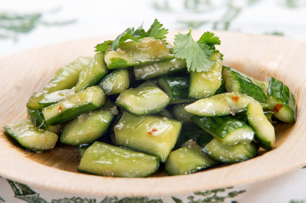

Quick Cucumber Salad

Description
Cucumbers are a great summer food, and in Beijing, they’re actually a common snack. When you take a walk in the park or head out to a tourist attraction or other landmark, you can see people just gnawing on fresh cucumbers as they walk. Impressed by this healthy habit, I purchased one from the local vendor in the park for 1 RMB, doing as the Chinese do. It tasted fresh and healthy, but if you want to pump up the flavor, try this quick recipe.
Ingredients
-
3 medium cucumbers
-
1/4 tsp salt
-
1/4 tsp sugar
-
1/8 tsp ground white pepper
-
2 tsp soy sauce
-
.5 tsp sesame oil
-
1-2 cloves minced garlic
-
.5 tsp olive oil
-
1 tsp chopped cilantro
-
1 tsp sesame seeds, toasted
Steps
-
Peel or scrub the cucumbers (whichever you prefer) and cut them into 2 to 3 inch sticks. Put them into a large mixing bowl.
-
Stir the rest of the ingredients (except the sesame seeds) in a small bowl to make the dressing.
-
Drain any water that may have seeped out of the cucumbers and toss in the dressing. Once the cucumbers are coated, garnish with sesame seeds (if using) and serve immediately.
-
When I made this today it was about 97 degrees outside, and I chilled the cucumbers for about 15 minutes in the fridge before tossing them together. I served the salad with a mildly sweet plum wine we bought while in Chengdu. The dish is light, cooling, and tasty!